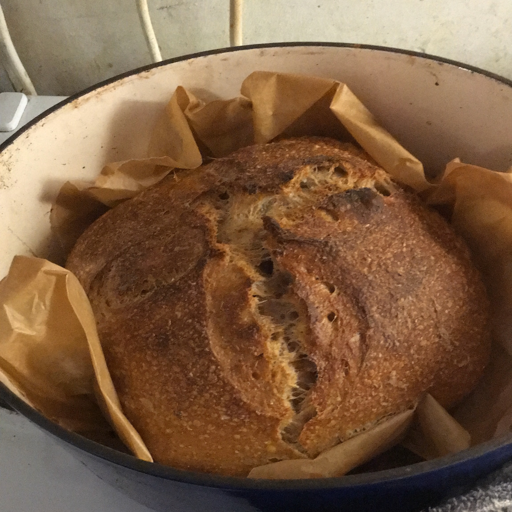

Sourdough

Description
This is a great recipe for no-knead sourdough. It takes a couple of days start to finish so plan ahead, but the hands-on labour time is low.
Ingredients
- 100g sourdough starter
- 400g flour (I use 200g white, 200g brown)
- 300ml water
- 10g salt
Steps
- Put the starter, flour water and salt in a bowl. Mix well with a spoon. Leave for 30 mins.
- Fold the mixutre with your hands. Leave for 30 mins.
- Fold the mixture again with your hands. Leave for 30 mins.
- Final time! Fold again and leave uncovered in the bowl for 8 hours.
- Flour a chopping board and put the dough on it. Fold a few times, then leave for 30 mins.
- While you're waiting, clean the bowl and leave to dry.
- Fold again. Line the bowl with baking paper and put the mixture in the bowl.
- Put the mixture in the fridge, covered, for 24 hours.
- Preheat the oven to around 230 degrees.
- Take the bread mixture out of the fridge and score the top with a bread knife. Then put the mixture in a dutch oven, still with the baking paper on. Bake for 35 mins.
- Take the lid off the dutch oven. Bake for a further 10 mins.
- Take the bread out and leave for at least 30 mins before eating.